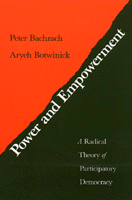

A political theory that encourage workers to become politically active to gain participatory rights and a means to strengthen the democratic process as a whole
A political theory that encourage workers to become politically active to gain participatory rights and a means to strengthen the democratic process as a whole


 A political theory that encourage workers to become politically active to gain participatory rights and a means to strengthen the democratic process as a whole
A political theory that encourage workers to become politically active to gain participatory rights and a means to strengthen the democratic process as a whole

|  |
Power and EmpowermentA Radical Theory of Participatory DemocracyPeter Bachrach and Aryeh Botwinickpaper EAN: 978-0-87722-939-1 (ISBN: 0-87722-939-2) |
"In this excellent book, Bachrach and Botwinick call for the pursuit of a participatory democracy through the pursuit of a workplace democracy."
—American Political Science Review
What role should political theory play in activating workers to engage in class struggle to extend participatory rights in the workplace and, in the process, expand and revitalize American democracy? Bachrach and Botwinick argue that the answer is to construct a theory of participatory democracy that would include a democratic concept of class struggle; a concept that provides workers and their allies an effective and legitimate course of political action. They see this concept not only as a means to encourage workers to become politically active to gain participatory rights, but also as a means to strengthen the democratic process as a whole. The authors contend that working-class struggle should be encouraged as a way of promoting the realignment of political parties along class lines and expanding citizen participation and public awareness of issues of national concern.
To illustrate their theory, the authors describe and evaluate worker self-management programs in Germany, Sweden, France, Italy, England, and the United States. Hoping to spur Americans to confront their crisis of democracy with boldness and imagination, Bachrach and Botwinick demonstrate that class politics is on the agenda and that the categories of class and class struggle are now up for democratic definition in a way that is unique in this country.
"This bold book champions robust democracy where Americans work as well as where they live. In so doing, it raises the standard of political discourse and challenges deeply ingrained habits of mind and practice."
—Ira Katznelson, Loeb Professor of Political and Social Science, New School for Social Research
"Surely a most troubling aspect of American politics is the extreme passivity of the mass public, even in the face of rapidly deteriorating economic and social conditions. Bachrach and Botwinick make the convincing and ultimately optimistic argument that passivity and its disabling consequences can be overcome through the radical democratization of the workplace. The key to workplace democracy, in turn, is in the activation of class consciousness and class conflict which Madisonian political institutions have suppressed. This book is a provocative examination of democratic possibilities."
—Frances Fox Piven, Distinguished Professor, Graduate Center of the City University of New York
"This is a lively, well-written book that renews the debate about the potential role of workplace democracy in our polity. Bachrach and Botwinick argue for an open, democratic class politics to counter the hidden class politics of the Reagan-Bush era. This book is a welcome contribution to the problem of enhancing democracy at the end of the twentieth century."
—Stephen K. White, Virginia Polytechnic Institute
"At a time of economic restructuring and political demobilization, this bold book champions robust democracy where Americans work as well as where they live. In so doing, it raises the standard of political discourse and challenges deeply ingrained habits of mind and practice. Most important, it sets out a program that links sustained reasoning about expanded participation with a nuanced analysis of American political and economic institutions."
—Ira Katznelson, Loeb Professor of Political and Social Science, New School for Social Research
Preface
1. Introduction
2. A Critical Analysis and Reconstruction of Participatory Theory
3. The Structural Mobilization of Bias
4. Workplace Democracy in Europe
5. Workplace Democracy in America
6. Power and Utopia
7. Public and Private Space: A Democratic Perspective
8. Class Struggle: A Key Concept of Democratic Theory
9. Democracy as Praxis
Notes Bibliography
Index
Peter Bachrach is Emeritus Professor of Political Science at Temple University.
Aryeh Botwinick is Professor of Political Science at Temple University and the author of Skepticism and Political Participation (Temple) and Postmodernism and Democratic Theory (Temple).
Political Science and Public Policy
© 2015 Temple University. All Rights Reserved. This page: http://www.temple.edu/tempress/titles/477_reg.html.